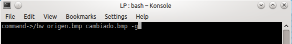

/*_____________________________________________________________________________ Cambia a escala de grises un un archivo tipo DIB (device-independent bitmap) correspondiente a una imagen RGB de 24 bits sin compresion de datos. Uso: invertirbmp archivo.bmp archivo_I.bmp _____________________________________________________________________________*/ #include <stdlib.h> #include <stdio.h> #include <string.h> #include "C-Lib\bmp.h" enum conversion{ grayScale, sepia}; int main(int argc, char *argv[]) { // Prototipos int posConversion (int , char** ); void grayColor(int, int, RGB_PIXEL *); void sepiaColor(int , int , RGB_PIXEL *); BITMAPFILEHEADER bmFH; BITMAPINFOHEADER bmIH; RGB_PIXEL *pixM; int nx, ny; int rwstatus; int opRead = 1; int opWrite = 2; int opScale = 1; enum conversion kind; if (argc < 3 || argc > 4) { fprintf(stderr, "\n %s:: Error: debe introducir dos nombres de archivos.\n \ Junto con una opcion -g para convertir a escala de grises y \n \ -s para convertir a sepia.", argv[0]); fprintf(stderr, "\n %s:: Uso : %s archivo.bmp archivo_I.bmp. -opcion [-g | -s] \n", argv[0], argv[0]); exit(1); } else if (argc == 3) { if(posConversion(argc,argv)!= 0)fprintf(stderr, "\n %s:: Uso : %s archivo.bmp archivo_I.bmp. -opcion [-g | -s] \n", argv[0], argv[0]); exit(1); } else if (argc == 4) { opScale = posConversion(argc,argv); opRead = 1 < opScale ? 1 : 2; opWrite = 2 < opScale ? 2 : 3; if (strcmp(argv[opScale],"-g")==0) kind = grayScale; else if (strcmp(argv[opScale],"-s")==0) kind = sepia; else fprintf(stderr, "\n %s:: Opcion erronea. Solo valen [-g | -s]",argv[0]); } /* Leemos el archivo, */ if ((rwstatus = ReadDibFile(argv[opRead], &bmFH, &bmIH, &pixM)) != 0) { fprintf(stderr, "\n %s:: Error No. %d al leer el archivo %s.\n", argv[0], rwstatus, argv[1]); exit(rwstatus); } /* identificamos las dimensiones de la imagen RGB, */ nx = bmIH.biWidth; ny = bmIH.biHeight; /* invertimos la imagen */ fprintf(stderr, "\n\n Procesando imagen %d x %d ...\n", nx, ny); switch (kind) { case 0: grayColor(nx, ny, pixM); break; case 1: sepiaColor(nx, ny, pixM); } /* y escribimos un nuevo archivo con la imagen modificada. */ if ((rwstatus = WriteDibFile(argv[opWrite], &bmFH, &bmIH, &pixM)) != 0) { fprintf(stderr, "\n %s:: Error No. %d al escribir el archivo %s.\n", argv[0], rwstatus, argv[2]); exit(rwstatus); } } /*_____________________________________________________________________________ Obtiene la posicion de la opcion de escalado a grises o sepia. Devuelve 0 si no se ha marcado ninguna opcion. ____________________________________________________________________________*/ int posConversion (int n, char** c) { int pos = 0; int i; for(i=0; i<n; i++, c++) if(strchr(*c,'-') != NULL) pos=i; return pos; } /*_____________________________________________________________________________ Pasa a escala de grises un archivo tipo DIB (device-independent bitmap) correspondiente a una imagen RGB de 24 bits sin compresion de datos. _____________________________________________________________________________*/ void grayColor(int nx, int ny, RGB_PIXEL *pixM) { int ix, iy, kp = 0; for (iy = 0; iy < ny; iy++) { for (ix = 0; ix < nx; ix++) { double gray = (double)pixM[kp].blue*0.114 + (double)pixM[kp].green*0.587 + (double)pixM[kp].red*0.299; pixM[kp].blue = gray; pixM[kp].green = gray; pixM[kp].red = gray; kp++; } } } /*_____________________________________________________________________________ Pasa los colores a sepia un archivo tipo DIB (device-independent bitmap) correspondiente a una imagen RGB de 24 bits sin compresion de datos. _____________________________________________________________________________*/ void sepiaColor(int nx, int ny, RGB_PIXEL *pixM) { int ix, iy, kp = 0; for (iy = 0; iy < ny; iy++) { for (ix = 0; ix < nx; ix++) { // Calculate the sepia color double blue = (double)pixM[kp].red*0.272+(double)pixM[kp].green*0.534 + (double)pixM[kp].blue*0.131; double green = (double)pixM[kp].red*0.349 + (double)pixM[kp].green*0.686 + (double)pixM[kp].blue*0.168; double red = (double)pixM[kp].red*0.393 + (double)pixM[kp].green*0.769 + (double)pixM[kp].blue*0.189; // Modified the original color pixM[kp].blue = blue < 255 ? blue : 255; pixM[kp].green = green < 255 ? green : 255; pixM[kp].red = red < 255 ? red : 255; kp++; } } }
Si se omite el ultimo apartado ejecutara por defecto un cambio a blanco y negro.
Ejemplos: $ bw origen.bmp destino.bmp
Esta opcion cambia la foto a la opcion por defecto, es decir, la cambia a blanco y negro.
$ bw origen.bmp destino.bmp -g  Esta opcion cambia la foto a gris, tal como indica la opcion "-g" $ bw origen.bmp destino.bmp -s Esta opcion cambia la foto a gris, tal como indica la opcion "-s"